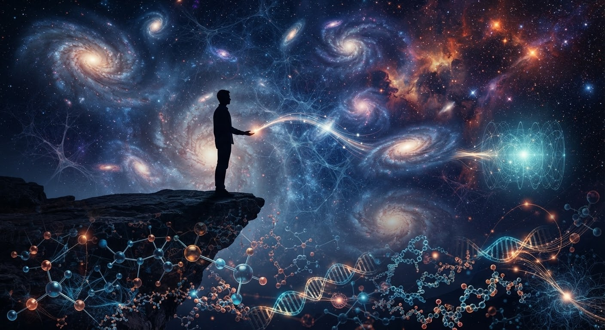

Task 2: در یک مقاله کوتاه توضیح بدهید که یادگیری دربارهٔ مقیاسها و اندازههای بنهایت ریز و بینهایت بزرگ جهان چگونه طرز فکر یا احساس شما نسبت به خودتان و جهان را تغییر داده است.
من ذره ای میان بی نهایت یا هم قطری در اقیانوس هرچه بیشتر درباره مقیاسهای جهان میآموزم بیشتر متوجه میشوم که انسان در برابر عظمت هستی موجودی بسیار کوچک است اما همین کوچکی به معنای بیارزش بودن ما نیست برعکس برای من شگفتانگیز است که همین انسان کوچک میتواند درباره کهکشانها ستارهها اتمها و حتی کوچکترین ذرات جهان بیندیشد علم به من آموخته است که جهان در دو سوی شگفتانگیز گسترده شده است از ذرات بسیار کوچک و مقیاسهای نزدیک به اندازه اتم و حتی کوچکتر...... تا ستارگان کهکشانها و ساختارهای عظیم کیهانی وقتی به این فاصله عظیم میان بینهایت کوچک و بینهایت بزرگ فکر میکنم احساس میکنم انسان مانند قطرهای در اقیانوس هستی است اما قطرهای که میتواند تمام اقیانوس را در ذهن خود تصور کند.... گاهی با خود میاندیشم اگر جهان با این همه عظمت است پس من چه اندازه کوچک هستم؟ اما پاسخ که در ذهنم شکل میگیرد شاید ارزش انسان در بزرگی جسم او نیست بلکه در بزرگی اندیشه روح و توانایی او برای شناخت حقیقت است قرآن مجید میفرماید: (وفي انفسكم افلا تبصرون) و در وجود خودتان نیز نشانههایی است آیا نمیبینید؟ انسان از نظر اندازه کوچک است اما از نظر پرسش و اندیشه میتواند به سوی بینهایت سفر کند هرچه جهان برایم بزرگتر میشود من کوچکتر نمیشوم بلکه فروتنتر عمیقتر و شگفتزدهتر میشوم و شاید این همان نقطهای باشد که علم و عرفان در آن به هم میرسند اکنون وقتی به آسمان نگاه میکنم فقط چند نقطهٔ نورانی نمیبینم بلکه عظمت جهانی را میبینم که جایگاه مرا به من یادآوری میکند و وقتی به کوچکترین ذرات فکر میکنم درمییابم که عظمت فقط در چیزهای بزرگ نیست گاهی یک جهان شگفتانگیز میتواند در چیزی نهفته باشد که چشم انسان حتی قادر به دیدنش نیست شاید من در برابر جهان تنها یک ذره باشم اما ذرهای هستم که میتواند به بینهایت بیندیشد و شاید زیباترین راز انسان همین باشد کوچک بودن در اندازه اما بزرگ بودن در اندیشه و یا هم انسان همین است قطره یی در اقیانوس.... #سرود_مجید
